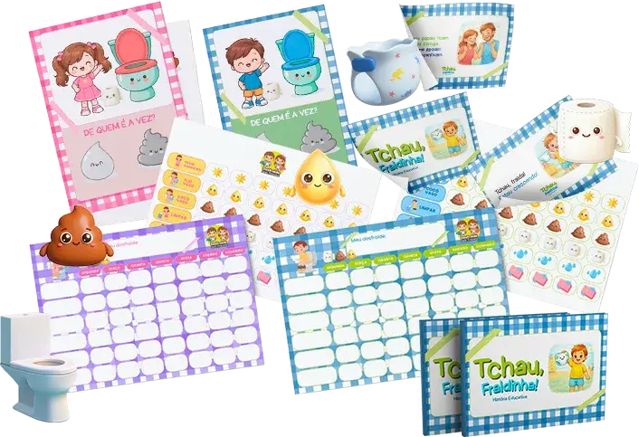
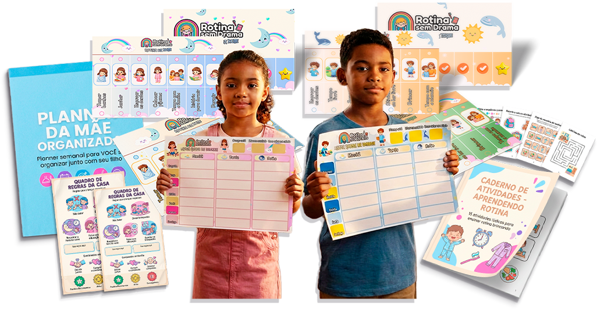

Descubra o Segredo para Fazer Seu Bebê Dormir Rápido e Tranquilo a Noite Inteira!

Transforme as Noites da Sua Família com Técnicas Humanizadas e Baseadas na Ciência.
Transforme as Noites da Sua Família com Técnicas Humanizadas e Baseadas na Ciência.
Se você está vivendo noites intermináveis, sem energia e sem saber
como mudar essa situação saiba de uma coisa:
você não está sozinha!
Você deseja, do fundo do coração, melhorar o sono do seu bebê de forma respeitosa, sem deixá-lo chorando, mas não sabe nem por onde começar.


com o nosso Ebook EXCLUSIVO, você terá acesso a:
Técnicas comprovadas, para fazer seu bebê adormecer rápido.
Estratégias para criar um ambiente de sono perfeito.
Explicações simples sobre a ciência do sono do bebê.
Prepare-se para transformar o sono do seu bebê de forma natural e humanizada!

Técnicas rápidas para dormir:
Saiba como
ajudar seu bebê a adormecer em minutos sem choros ou stress.
Ambiente perfeito:
Descubra como ajustes
simples na iluminação temperatura e sons podem melhorar o sono.
Ciência do sono:
Entenda as necessidades
do sono do seu bebê em cada fase e como respeitá-las

Rotina natural:
Aprenda como a rotina diária pode influenciar o sono do seu bebê.
"Finalmente, meu filho dorme bem e eu consigo descansar. Este Ebook
mudou minha vida!"
Mariana Soares
"Eu achava impossível melhorar o sono de gêmeos, mas as técnicas
realmente funcionam!"
Gabriela Santos
"A massagem e as dicas de rotina foram um divisor de águas aqui em
casa. Agora meu bebê consegue dormir a noite toda."
Clara Mendes

Bônus 1: Desfraude Sem Medo
"Um
caminho leve e respeitoso para o desfralde, onde você conduz seu
filho com segurança sem pressão, sem traumas e sem se sentir
perdida no processo."

Bônus 2: Rotina Sem Complicações
"Um
guia simples pra você finalmente ter dias previsíveis com seus
filhos, sem viver no improviso, sem culpa e sem sentir que está
sempre fazendo tudo errado."
Baseado em pesquisas científicas, comprovadas e orientado para um sono humanizado.
Simples de aplicar, com orientações práticas e objetivas.
Sem técnicas que envolvam choro ou abandono, respeitando as necessidades do bebê e da família.
de R$97 por
ou R$19,90 avista